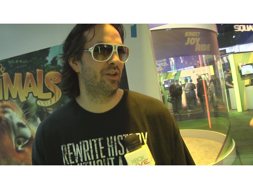

Inside Xbox brings you more than your typical gaming content. We sit down with game developers, programmers and industry giants to give you an inside look into the world of Xbox. This show also air…
Use a Nerf Gun, Kinect Skeletal Tracking, and a Turret to protect your office![WMV] [0:02:50] [2011/08/06] Dan and Clint stop by the Tech with Tina show to demo the Kinect-Enabled Turrett! The turrett uses skeletal tracking to detect if someone is in your office, it pans the gun toward the intruder and…
E3 2011: Major Nelson talks about cloud storage, beacon and games[WMV] [0:06:36] [2011/06/10] Major Nelson talks about Xbox Live and Cloud Storage which gives us the ability to save our Xbox Live profile and saved games up to the cloud so you have access to them anywhere. He also talks about…
E3 2011: Designing for Xbox[WMV] [0:06:23] [2011/06/08] Carl Ledbetter is a designer for Xbox and has worked on the Kinect and Zune. He has also been at the company for sixteen years and takes us on a trip down memory lane starting with the Intellimouse…
E3 2011: AMD and eyefinity technology[WMV] [0:07:00] [2011/06/08] I stopped by the AMD booth at E3 to get information on AMD's eyefinity technology. We talk about the new graphics card and processor used for PC gaming and more.
E3 2011: Interview with Kudo Tsunoda about Microsoft's E3 announcements [WMV] [0:05:33] [2011/06/07] Microsoft's E3 Media Briefing was yesterday and the conference kicks off with a bang in Los Angeles today. Kudo Tsunoda talks to Channel 9 about the E3 Kinect announcements and the soon to be…
E3 2011: Forza 4 Interview with Dan Greenawalt[WMV] [0:07:46] [2011/06/06] Dan Greenawalt stops by the Channel 9 studio to talk about the E3 announcements surrounding Forza 4, the integration of Kinect and his love of tire dynamics.
Answering Niners Questions about Jelly BeanThe Kinect Drivable Lounge Chair[WMV] [0:12:15] [2011/05/07] In this video, Clint and Dan answer your questions about Jelly Bean—The Kinect Drivable Lounge Chair. They cover a number of topics, including how they decided on the current control scheme, how much…
The Path of Go - Created in F#[WMV] [0:05:18] [2011/04/30] Ralf Herbrich is a Director of Fuse Labs U.K. and one of the developers who helped build the Xbox Live Arcade game, "The Path of Go." The game was created using F# and to our knowledge is…
The Ultimate Gaming Pod - OVEI[WMV] [0:06:25] [2011/04/27] Perry Darling from OVEI has built the ultimate gaming pod for gamers. With full 5.1 surround sound, multiple screens, and the technical ability to house your Xbox 360...this thing is awesome.
A Few Minutes with Nolan Bushnell - Creator of Pong and Atari [WMV] [0:03:43] [2011/03/31] I had the fortunate experience of sitting down and having an hour-long conversation with Nolan Bushnell, inventor of PONG and ATARI, for an upcoming project I am working on. That video won't be…
Chatting with the Kinect Team's Alex Kipman, Kudo Tsunoda, and Darren Bennett[WMV] [0:08:43] [2011/03/27] I had a chance to spend a few minutes with some of the Kinect team's key members. Most of what they are working on is under lock and key, but it was nice to chat with them for a little bit and get a…
One of the inventors of Human Skeletal Tracking - Jamie Shotton[WMV] [0:07:47] [2011/03/20] Jamie Shotton is one of the inventors of Human Skeletal Tracking—he works in Microsoft Research Cambridge and dropped by the states, and our studio, to chat about this great invention. Human skeletal…
Jane McGonigal - How playing games can make the world a better place[WMV] [0:05:46] [2011/03/17] You may have recently heard Jane McGonigal on NPR or even watched her on Comedy Centrals "The Colbert Report". She has recently written a book titled "Reality is Broken". Why…
Interview with the creator of the TrueSkill ranking system[WMV] [0:05:15] [2011/03/15] Ralf Herbrich is the man behind the TrueSkill ranking system used in Halo and elsewhere. He is also the director of Fuse Labs in the UK and stops by our studio to talk about how TrueSkill was…
GDC 2011 - a quick overview! [WMV] [0:03:52] [2011/03/12] I was at GDC 2011 in San Francisco this year and ran into a few old friends. Including video game journalist Geoff Keighley and bungie composer Marty O'Donnell. GDC is a great event that happens…
Playtesting for Xbox [WMV] [0:04:43] [2011/03/11]
[WMV] [0:04:43] [2011/03/11] Okay, so you want to get a sneak peek at the Microsoft campus, an inside look into Xbox, and get your hands on a new game. Well, becoming a Microsoft playtester is one way to do that. I stopped by…
Interview with Gearbox co-founder Brian Martel about Duke Nukem Forever[WMV] [0:05:33] [2011/02/15] Well, it's been almost 13 years since we have last seen Duke Nukem but he is finally hitting store shelves on May 3rd. I have a chat with Gearbox co-founder Brian Martel about what took so long, the…
CES 2011: Kinect and Live Mesh[WMV] [0:02:59] [2011/01/11] CES 2011 was bigger than ever this year. I hit the show floor where Ryan Asdourian from Microsoft was giving a demo about Kinecting to your PC. He also takes us through Live Mesh.
New Xbox 360 Transformer controller[WMV] [0:06:16] [2010/11/10] The new Transformer controller is available today as part of the play and charge kit bundle. The controller switches from the directional d-pad to the disc. I have a chat with John Ikeda who is…
The basics on navigating the Kinect [WMV] [0:03:25] [2010/11/06] The Kinect Team gives us some of the basics on navigating the kinect: How to bring up the Kinect hub. The different ways to get into the hub, including using the controller or hands free. Guide…
The tech behind Kinect: Major subsystems, RGB camera, Depth Sensor[WMV] [0:04:20] [2010/09/30]Raghu Murthi and Albert Panello talk about some of the technology behind the Kinect, including the below points: Three major subsystems in the sensor (Optical, Audio, Motor) Optical consists of depth…
Windows Phone 7 app: Halo Waypoint just announced[WMV] [0:03:17] [2010/08/17]I sit down with Dan Ayoub who is an executive producer at 343 Industries. 343 Industries just announced that the Halo Waypoint app will ship with Windows Phone 7. It is a Silverlight application and…
E3 2010: Core games Highlight Video[WMV] [0:05:26] [2010/06/19]E3 2010 is finally over and here is a short video which brings you all of the core game highlights. Halo Reach, Gears of War 3 and Call of Duty: Black Ops. All of the Call of Duty: Black Ops game…
E3 2010: Interview with the developer behind HomeFront[WMV] [0:07:30] [2010/06/19]At E3 2010 I had a chance to spend some time with one of the developers behind the yet to be released PC and Xbox 360 title HomeFront. We talked a lot about PC gaming and the technology behind the…
E3 2010: Interview with Kinect's Kudo Tsunoda[WMV] [0:05:54] [2010/06/18]Kudo Tsunoda is the creative director behind Microsoft's Kinect for the Xbox 360. He has been in the gaming industry for many years and has quite the
resume. We talk about some of the early…
E3 2010: Halo Reach Party at E3[WMV] [0:01:37] [2010/06/18]Halo Reach is the next installment in the Halo Franchise and at the Halo party they premiered Firefight 2.0 which has a bunch of cool new features. Firefight has full matchmaking support, some pretty…
E3 2010: Kinect Games Highlight Video[WMV] [0:01:53] [2010/06/17]Microsoft has announced that there will be at least 15 titles that will ship with Kinect this November. I had a chance to give a few of them a try on the show floor. Kinectimals, Kinect Joy Ride,…
E3 2010: Inside Halo Reach[WMV] [0:05:23] [2010/06/17]At E3 2010 I had a chance to talk with Environment Art Lead Mike Zak about working on Halo Reach. The game takes place in 2552 and players control Noble 6, a member of an elite super soldier squad. …
E3 2010: Kinect Interview with George Andreas[WMV] [0:05:53] [2010/06/17]Yesterday at E3 2010 I spent most of my day at The Xbox 360 booth playing and getting to know Kinect. There were a variety of games on display like Track and Field, Kinectimals, bowling and dance. I…
E3 2010: Highlight Reel from The Microsoft Press Briefing[WMV] [0:03:03] [2010/06/15]Yesterday, Microsoft held their press briefing at The Wiltern Theatre in Los Angeles to help kick off E3 2010. We made some great announcements. There will be a new Xbox 360 hitting store shelves…
Corrinne Yu - Principal Engine Architect for Halo Team Microsoft: Part Two[WMV] [0:46:44] [2010/05/20]
Corrinne Yu is the Principal Engine Architect for Halo Team Microsoft. In this video, she drops by the Channel 9 Studio for Part Two of her interview. You can watch
Part One here. All questions…
Corrinne Yu - Principal Engine Architect, Halo Team Microsoft: Part One[WMV] [0:35:39] [2010/05/11]
Corrinne Yu stops by the Channel 9 Studio once again to answer your questions. We split this interview into Two Parts because we talked for well over an hour and a half. Some of your questions she…
Interview with Design Director Cliff Bleszinski of Epic Games [WMV] [2010/04/06]Cliff Bleszinski is the Design Director at
Epic Games. In this video, he talks about the success of the Unreal Engine and the
tool set that allows devs to work smarter not harder. As outlined via…
MMA - Mixed Martial Arts is the brand new title from EA Sports[WMV] [0:09:06] [2010/03/31]EA is coming out with a brand new Xbox 360 title called
EA Sports MMA. MMA, or Mixed Martial Arts, is a sport that is becoming more and more popular. In this video, I talk to Randy Chase, who is one…
Tiger Woods PGA Tour 11 on your Xbox 360 [WMV] [0:06:03] [2010/03/30]
[WMV] [0:06:03] [2010/03/30]Tiger Woods PGA Tour 11
is coming out for the Xbox 360, and so in this video I sit down with Travis Sailor, one of the game's producers. We talk a bit about the environments and graphical elements,…
GDC 2010: XNA Game Studio 4.0[WMV] [0:03:16] [2010/03/12]I wrap up GDC 2010 with an interview with Shawn Hargreaves about
XNA Game Studio 4.0. I think Microsoft picked a perfect event to show off
XNA Game Studio 4.0. With XNA 3.1 developers were able…
GDC 2010: Alpha Protocol, Lego Harry Potter, DLC for Mass Effect 2[WMV] [2010/03/12]Although GDC is really about the game makers and developers there a few titles being shown off.
Alpha Protocol is being referred to as a Modern Day Espionage RGP and has about 30 hours of gameplay,…
GDC 2010: Windows Phone 7 and Xbox Live functionality[WMV] [0:03:05] [2010/03/12]Windows Phone 7, XNA and the game hub are all the talk here at
GDC 2010. I had a chance to sit down with Michael Klucher and find out more about the gaming experience it will provide and what's in…
GDC 2010 - first look at Power Gig: Rise of the Six String's Gaming Controller[WMV] [0:03:50] [2010/03/12]I'm in San Francisco for
GDC 2010 this week and will be bringing you a few different stories from here. Later on today I will be publishing a Windows Phone 7 interview with Michael Klucher about…
Big Brains and Video Games - An interview with MSNBC.com's science editor Alan Boyle[WMV] [0:09:58] [2010/03/07]Alan Boyle is MSNBC.com's science editor. He has been with MSNBC since 1996 and won awards from the National Academies, the American Association for the Advancement of Science, the National…
Winter Xbox Games: Part Two - Major's Minute[WMV] [0:04:26] [2010/02/22]In
Part One of The Winter Xbox Games Major Nelson challenged me to a round of snowboarding in celebration of the Winter Olympics and well he lost miserably so it's double of nothing. Don't forget…
Winter Xbox Games: Part One[WMV] [0:03:26] [2010/02/22]In celebration of The Winter Olympics Larry Hryb (Major Nelson) from Inside Xbox and I have a little fun with our version of The Winter Xbox Games. Remember to check out all of our Inside Xbox videos…
CES 2010: Aaron Greenberg talks Project Natal [WMV] [0:02:13] [2010/01/07]Aaron Greenberg talks to Major Nelson of Xbox fame about some of the announcements coming from Xbox out of CES 2010. He talks new titles, Natal and maybe just a little something more.
Marty O'Donnell - The man behind the Halo Music[WMV] [0:15:28] [2009/12/18]
Marty O Donnell is the Man behind the Halo Soundtracks but he is so much more and this is by far one of my favorite interviews since I have been at Microsoft. I hope you enjoy.
Martin…
Corrinne Yu: Principal Engine Architect, Halo Team Microsoft [WMV] [0:37:33] [2009/11/23]
Corrinne Yu is Principal Engine Architect at Halo Team Microsoft. She is a 1st Party Halo Lead. She is the first and only female Technical Lead of the whole Microsoft Game Studios. With almost 20…
Windows 7 and your Xbox 360[WMV] [0:09:36] [2009/10/22]Most of us own a PC, most of us own an Xbox 360 and most of us will be installing Windows 7. So what exactly can Windows 7 and your Xbox 360 do together? I sit down for a chat with Ben Reed as he…
Interview with Frank O' Connor of 343 Industries and Joseph Staten from Bungie[WMV] [0:12:06] [2009/09/24]Joseph Staten is the writer and Creative Director of Halo 3 ODST. He talks about the Meta-Story and why Halo 3 ODST was the favorite game of the series for the Devs. Joseph also talks about how ODST…
Halo 3 ODST: Interview with lead Producer Curtis Creamer from Bungie[WMV] [0:16:03] [2009/09/23]
Halo 3 ODST went on sale at midnight last night and I went to the launch party to ask some of your questions and talk to the people behind the game. Curtis Creamer is the Halo 3 ODST games producer…
Inside Xbox: Forza 3 Dyno Session and Interview with Content Director John Wendl[WMV] [0:15:02] [2009/09/01]There's no fun in "All work and no play", which is exactly why most of us own
Xbox 360's. When the Xbox was released in 2001 in North America there was a lot of skepticism about the…